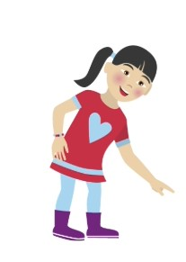
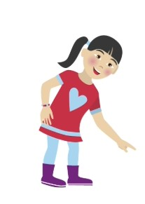
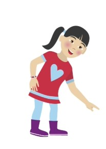

Luisteren naar de uitleg
 

Opgave 1
Splits 13 in twee delen. Het eerste deel is 6. Wat is het tweede deel
Klaar
Je bent nu bij het eindscherm. Controleer of je alle opdrachten hebt gemaakt.

Splits 13 in twee delen. Het eerste deel is 6. Wat is het tweede deel
Je bent nu bij het eindscherm. Controleer of je alle opdrachten hebt gemaakt.